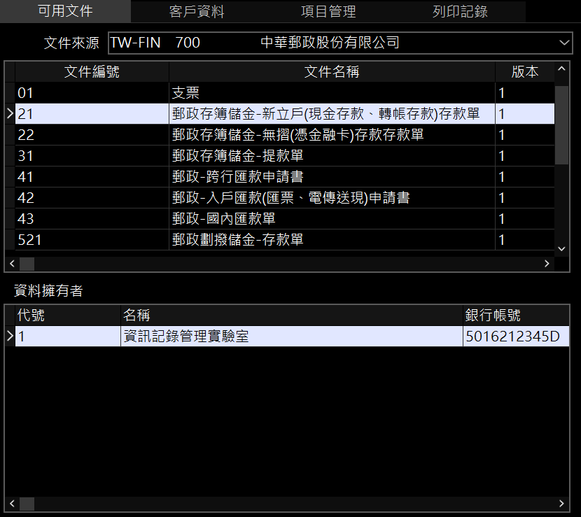
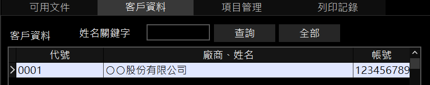
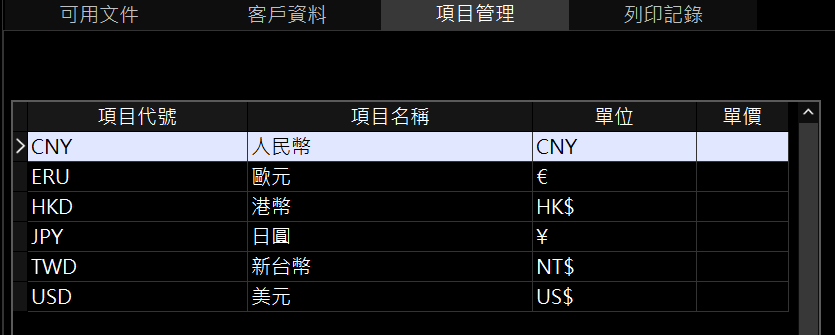
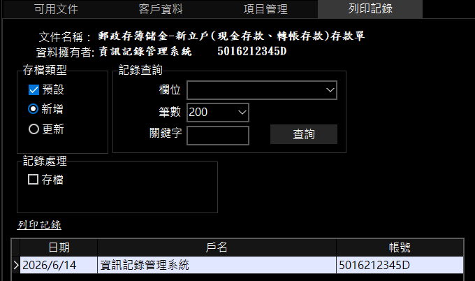

工作頁
工作頁位於主視窗左邊，有 4 個分頁。先在「可用文件」選好文件及資料擁有者，之後的輸入、列印及存檔都會套用這個組合。
可用文件
選擇「文件來源」後，點選要使用的文件，再點選資料擁有者（使用文件的個人或單位，例如支票的帳戶）。清單中沒有文件時，請先由「常用 > 文件交換」匯入。

客戶資料
文件的往來對象，例如收票人、收件人；可依姓名關鍵字查詢。資料於「資料 > 客戶管理」維護。

項目管理
輸入時常引用的項目，例如發票的品名、單位、單價，或會計科目。資料於「資料 > 項目管理」維護。

列印記錄
列印過的資料會保留在這裡，相同內容不必重新輸入。
- 點選一筆記錄，資料即帶入輸入區域，可修改後再列印。
- 以「記錄查詢」依欄位、關鍵字查詢以前的記錄。
- 不需要的記錄，滑鼠雙擊或按 Delete 刪除（可按住 Ctrl、Shift 多選）；誤刪時按「取回」找回。
備註：
- 表格顯示哪些欄位，於紀錄顯示設定。
- 調整欄寬：點選表格上方的「列印記錄」字樣，拖拉或輸入欄寬，完成後再點一次即儲存。
